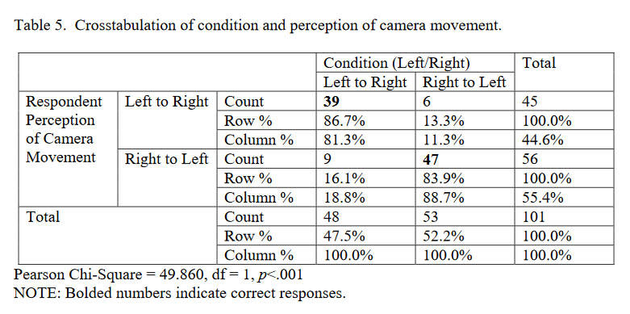

由于我总是控制不住脑子，总喜欢结合生活中看到的东西不停地胡乱思考。所以我不得不写出一些东西来满足脑子的表达。
本文写于5.19深夜3:07
左与右
之前有看一篇互联网上的文章（或者说帖子）提到电影学中场景布局与人物定义的联系。
好人总会在左侧，坏人总会在右侧。经常但不完全绝对。
关于左与右的问题在生活中也会常见。
生活中的反例
这是一个有趣的问题。从心理学中的具身认知的角度出发，人们会倾向于（统计学上）把右与好、左与坏联系起来，比如语言中的“right”、“旁门左道” 等，比如一张左右合成的面孔，人们会倾向于认为右边的表情的积极的，而左边的表情是消极的，再比如，同一个带有手柄的清洁剂，手柄朝右边摆放相比朝左边摆放，人们会更倾向于购买。当然，前面的结论都是从右利手的角度出发的，因为长期的手部运动经验塑造了左右空间的情感效价偏好。
来源知乎链接：https://www.zhihu.com/question/20348605/answer/33822609
影视中的设计
而电影学中的这种设计实则与生活中的右为“顺”这种概念似乎截然不同。
这与大多数国家的视觉习惯有关，西方以及近代国内都遵从从左至右的阅读习惯，这同时也影响了视觉习惯。
从左至右的阅读习惯也不只存在于书本，在电影的镜头中也会遵从这种思维。
好人总是从左至右入镜（此时的镜头向左逐渐转动）。
坏人总是从右向左入镜（此时的镜头向右逐渐转动）。
人们对于从左至右阅读的顺序感受对于大脑到更加舒适，因此也会更顺利地把出现的人物归纳为positive。反之则会感受到一丝细微的别扭，人物的登场也就变的不那么另人愉悦。
这是一个非常细微也非常有趣的小区别。甚至绝大多数人，当我说绝大多数意味着个人归纳的99.9%人群，都没有注意到这种变化以及自己脑子内发生的生物学反应。
特例：对波
然而有一点很有趣的现象是，在日本漫画里（其他很多国家漫画类影视作品也是），有一个不成文但易于观察的规定是“自古对波逢左必输”。意思就是在对波时，站在左侧的通常会输。这一点与我们前面写的左侧经常为好人这一点似乎讲不通。
比如奥特曼和怪兽的很多对波。以及其他动漫里主角和反派的魔法对冲。
对于这一点互联网上有人解释是：
因为在日本舞台剧中右边人物是面向观众的，叫做「上手」，反之对峙的左边人物是「下手」
「上手」代表了主角或者强势方
富野由悠季在《影像的原则》中也提过左右的区分
所以一般循规蹈矩的话都得把主角方放在右边，弱势的一定在左边
来源：https://www.zhihu.com/question/377552243
关于这一点我的个人思考是，“对波”这个极具张力和画面感的动作，在结束的那一刻总有一方会有一个“爆炸”或者极具视觉冲击的画面。而这个画面在左侧还是右侧的决定也需要考虑人眼的种种属性。在哪一方可以表现出正义阵营胜利的冲击？在哪一方可以让观众觉得更顺眼？在哪一方可以更好衔接下一个画面？
光凭我现在坐在电脑面前幻想而言，左侧的爆炸带来的视觉冲击似乎会比右侧更顺。其次，对波时摄像头的位置处于二者中间，此时衔接下一个镜头，向右，向上，衔接好人威风站立的镜头，向左，向下，衔接坏人狼狈的躺在地上奄奄一息。
这种来自于我自身的解释似乎能将这个设计略微向自己说通一些。（后注：存在bug）
电影批判学术
但很巧也不幸的是，我喜欢看论文。我的好奇心与深夜失眠和对于碌碌无为的憎恶使我去看这种“没用”但“有意思”的知识。
还真给我找到了一篇关于影视中左与右的学术研究：“Which Way Did He Go? Directionality of Film Character and Camera Movement and Subsequent Spectator Interpretation”
来自克利夫兰州立大学（Cleveland State University）
这篇论文的摘要是：屏幕上的运动元素根据其用途而具有特定的含义和上下文。这项研究的重点是电影观众如何解释从左到右和从右到左的横向运动。仅进行后测试的实验设计使用短片中先前存在的镜头来测试这两个方向之一的运动。参与者在观看序列后回答了一份简短的调查问卷，并回答了有关序列的情感和感知评估的项目。研究人员还收集了有关研究人员怀疑可能造成这种影响的因素的数据，包括宗教、心理测量、回忆、媒体使用和惯用手。进行因子分析后，方差分析显示观众对负面影响因素的评价与两个实验条件之间存在显着关系，因此从右到左的运动会被认为更负面。此外，该研究没有发现宗教、惯用手、回忆或心理测量项目（精神病除外）的解释的支持。
文章不长，本身有33页，但由于它字体较大，转换成我们这类人常读的cs论文latex 10pt的格式，估计只有10页。
Introduction
intro中倒是看到了一个有意思的学问，名叫critical scholarship on film，电影批判学术。
除了提到运动图像认知研究协会、从定量和研究角度研究运动图像现象（近年兴起，非本文）之外，提到本文考虑了电影角色和摄像机运动的方向性如何影响随后的观众解读。它回顾了电影中从左到右和从右到左运动的文献，并预测观众会对两个不同方向发生运动的电影内容有不同的反应。然后本文将介绍测试预测的实验结果，并根据电影文献讨论了研究结果以及这项研究对电影和其他运动图像学者的影响。
电影制作技术的意义
要学习影视中左与右的问题，首先确实需要从电影制作的意义看起。本文本质上其实是一篇“实证性研究”类的文章。
电影语言包括许多关键维度，这些维度不一定与为电影编写的对话或电影角色在电影中实际使用的语言有任何关系。这种电影语言在很大程度上是在有声电影之前发展起来的，并且源于各种制作和后期制作技术、动作和其他有助于建立意义或引发共鸣的元素的使用。观众内心的情感。对这种语言的分析主要属于符号学分析的范畴，没有对流行程度或观众反应进行实证检验。
有一个法语的术语叫做"mise en scene"。用于描述电影制作者如何利用画面中物体和角色的放置来帮助观众建立意义。此外，剪辑方式、图像浮现顺序等等都能激发不同的观众情感。
正如"mise en scene"，其实这个法语直译的理解是"场景调度",角色的动作也会触发观众不同的感受（心理感受、情节的重要性等等）。不过这些知识其实大家都能感受到，这里主要为了引出后文。
屏幕上向上或向下的移动被视为对观众对角色的心理解释有潜在影响，学者Giannetti在2011年的一篇研究中认为屏幕上向上的运动可以使角色看起来更强大或更占主导地位，而角色向下的运动可以被观众视为较弱或顺从的角色。这点与我前文揣测的对波后镜头对于胜者和弱者的动作似乎吻合（在写前文的时候我还没开始看这篇文章）。
Eisenstein将远离镜头的运动描述为“朝向地平线或深度的空间运动”。从心理上讲，角色远离镜头的动作可以推断角色正在退缩或在情感上与我们疏远，并且任何情感强度通常都会降低。根据Giannetti的说法，如果电影中的反派远离镜头，反派和观众之间就形成了“保护距离”；这样观众就会有一种如释重负的感觉。
然而，沿着同一轴向相机移动会在观看者中产生非常不同的感觉。 Giannetti认为，观众会认为角色向镜头的移动是有攻击性的，或者当电影中的反派靠近镜头时，他或她可能会被视为“有敌意或具有威胁性”。观众。因此，根据电影理论家、学者和创作者的说法，正如Kuleshov所描述的那样，画面内的角色沿着屏幕运动的两个轴的运动可以在心理上影响观众。
从左到右和从右到左移动
早期苏联电影制片人谢尔盖·爱森斯坦认为，在艺术中，艺术家可以控制观察者的“眼睛路径”（path of the eye），这意味着艺术家可以在视觉上将观察者的眼睛吸引到画布上的特定点，并决定眼睛随后移动的方向高于绘画，因为它将作品作为一个整体。这是通过在画布上仔细构图和放置绘画主题来完成的。
爱森斯坦认为，电影制作者也有同样的能力来控制观众在银幕上移动时的“视线路径”。尽管他意识到运动可以朝着艺术家想要的任何方向发展，但在他 1938 年的电影《亚历山大·涅夫斯基》中的一个关键序列中，俄罗斯军队即将参加著名的“冰上之战”序列，爱森斯坦特别选择了将观众的视线从屏幕左侧引导到屏幕右侧。爱森斯坦写道，“因此，在整个序列中，眼睛从左到右的这些单独的运动加起来，给人一种左边有东西的感觉，‘全力以赴’朝着右边某个方向努力”
O’Leary (2003) 在对霍华德·霍克斯 (Howard Hawks) 执导的 20 部影片进行内容分析时指出，导演非常喜欢从左向右平移，64% 的平移朝该方向移动（统计上存在显着差异）。正如对旧好莱坞电影和新好莱坞电影的两种不同分析表明的那样，霍克斯并不孤单。奥利里 (O’Leary) 研究了 20 部选定的经典好莱坞电影，发现向右平移的数量多于向左平移的数量，比例为 115 比 74。 Salt (2005) 研究了 1995 年以来的好莱坞电影，发现导演经常偏爱从左到右的方向在无动机的摄像机运动中（即不跟随角色运动的摄像机运动），尽管这种趋势可能有些有限，如 649 比 592 的平庸比例所示（Salt，2005）。尽管如此，相机向右移动的倾向是显而易见的，并且必须问为什么存在对一个横向方向的这种偏好而不是另一个方向。
索尔特（Salt 2005）认为，人类惯用右手和右脚的优势可能可以解释这种右倾倾向。索尔特写道：“这种物理倾向预计会延续到摄像机操作中，因为惯用右手的人更容易向右平移，因为齿轮头上的平移轮所需的顺时针旋转更容易。对于惯用右手的人来说，比向左平移所需的逆时针旋转更自然”。由于越来越多的人喜欢右手，而在艺术中发展右手审美规则的论点并不是什么新鲜事。在古典艺术中，人们普遍认为光源通常起源于画布左上部分的某个地方，因为这使得惯用右手的艺术家更容易在他们的右手边绘制这种光的效果。这种在相机操作和古典艺术中看到的对右手习惯的坚持最终可能会在不知不觉中迫使电影导演将他们的角色从左移到右，或者主要从左到右平移，或者这种沿着方向的选择还有更多的原因吗？横轴？导演能否通过让角色从左到右移动或从左到右移动来传达角色及其处境的未言明含义？
电影导演可能会根据一条很少被书面或谈论的规则来决定角色是否应该在屏幕上从左到右或从右到左移动，该规则声称角色从屏幕左侧移动到右侧观众认为屏幕的变化是正常或自然的。角色从画面右侧向左侧移动的情况则相反。据推测，向左方向的横向移动被认为是不自然的或者甚至是不舒服的，或者甚至可能是朝该方向移动的人正在挣扎。到底为什么观众会因为横向运动方向的不同而感受到自然或紧张，这个问题还有待争论，尽管贾内蒂写道，这是“因为眼睛倾向于从左到右阅读图片… ”。此外，在阅读文本时，西方文化中的人们有这 倾向从左向右阅读，因为大多数西方文化语言都是以该方向水平呈现的，因此朝这个方向的移动似乎更自然。
此外，场景中角色所在的屏幕一侧可以进一步深入了解为什么从左到右的移动被视为积极或自然。在讨论阿尔弗雷德·希区柯克时，艾伯特（Ebert，2004）指出，“他总是使用这样的惯例：屏幕的左侧代表邪恶和/或较弱的角色，而右侧则代表善良或暂时占主导地位的角色。”因此，位于屏幕左侧或“邪恶”一侧的善良角色应该努力横向移动到屏幕右侧，并且这种移动可以被视为积极或自然的，而当观众目睹一个角色从屏幕的右侧或善良的一侧向左侧或邪恶的一侧移动时，观众会感受到相反的感觉。
这种认为物体放在一个人左边的是坏东西，放在一个人右边的是好东西的观念，可能再次与世界人口中右撇子占主导地位有关。研究表明，人们倾向于偏爱惯用手的一侧。由于左撇子在总人口中所占比例如此之小，因此有可能存在一个右撇子主导的世界，其中右侧是“正确的”而左侧是错误的，这一点已得到大量实证研究的支持。如果艾伯特（Ebert，2004）的建议是正确的，并且希区柯克确实遵循这种从左到右的角色移动规则，那么在实践中审视这一规则就很重要。
左右运动的case study
跳过，你们自己随便找部电影看的时候留意一下。
Research Questions
RQ1：当观众从左到右或从右到左观察电影中的运动时，个体观众的评价是否会有所不同？
RQ2：西方宗教信仰是否会影响观众对电影序列中定向横向运动的评价？
RQ3：惯用手（左利手、右手或双手）是否会影响观众对电影序列中定向横向运动的评价？
RQ4：本研究中检查的主要心理测量指标（即精神病性、神经质、外向性、体验开放性和认知需求）是否会影响观看者电影序列中横向运动的评估？
RQ5：观众会记得横向角色运动和横向/平移摄像机运动是在正确的方向吗？
实验方法
从16mm叙事短片（我不明白这里的16mm是什么意思，但我现在不想去搜它，简单理解就是从一个短片里）中选取的片段被用来构建一个 55 秒的序列，突出人物和摄像机的横向运动。在一种版本中，所有横向运动都是从左到右。在第二个版本中，Avid Composer 中的“flop”选项用于简单地切换序列中所有镜头的方向（补充知识：Avid Media Composer 是 Avid Technology 开发的视频编辑应用程序或非线性编辑软件解决方案。自 20 世纪 90 年代首次采用以来，Media Composer 已成为好莱坞电影制片厂、广播电视网络和流媒体服务制作使用的主要非线性编辑系统），即该版本中的所有横向运动都是从右到左。这种电子变换确保了序列彼此是完美的镜像。两个版本的电影片段都是无声的。
该序列由以下从左到右版本的镜头组成：
- 郊区房屋的外部远景镜头 (LS)，摄像机从左到右跟踪运动。
- 一位女士在靠近三扇窗户的餐桌旁用电脑工作的一位女士的内部 LS，从后面拍摄。
- 一张室内摇摄镜头，从左到右，从餐厅内部拍摄，跟随一个男人偷偷地经过一系列的三扇窗户；当他从左向右经过时，摄像机短暂地瞥见了他。
- 画面左侧女子的内部特写镜头，是从后面拍摄的，当时她将头转向右侧。
- 在室内 LS 中，摄像机从左到右跟随女人起身并退出餐厅。
- 在室内 LS 中，摄像机捕捉到该女子走出后门，站在门廊上看着后院。
- 当这位女士环顾后院时，她的眼睛从左向右扫视，她的外部 CU(补充知识：在电影学里面CU指的是Close Up，即特写)。
- 女人视角的外部 POV 镜头，她从左向右平移穿过后院，表面上是在寻找男人。
实验方案
参与者是从一所中等城市大学的传播课程中招募的。该研究是使用 Media Lab 软件进行的，并在标准台式电脑屏幕上查看。在仅进行后测的设计中，每位参与者观看刺激电影序列的一个版本，并进行随机分配。观看结束后，参与者通过媒体实验室在计算机上回答了一系列问题。该协议和测量仪器得到了大学 IRB 的批准。
具体实验措施
跳过，我知道你们不想看
结果
Analyses for RQ1: Simple Effects of Directional Movement
根据作者的一组评估指标（17 个语义差异），进行了 VARIMAX 正交旋转因子分析，得出了 6 个因子（table 1）。这六个因素是：舒适/安全、负面影响、常态、活动、“本我”和优越。每个因素都根据最高负荷项目进行标记。所有群落和特征值均符合可接受性的标准。
在六个因素中，只有负面影响在两个实验条件（从左到右与从右到左）之间存在显着差异。它的主要加载器是：不喜欢剪辑/喜欢剪辑、好/坏、有趣/无聊和强/弱。从我们引用的文献以及上述电影中的轶事证据来看，这似乎符合我们的假设。如表 2 所示，单因素方差分析揭示了我们的两种情况的统计显着主效应 (p = .015)，平均因素得分为 L/R = -.253 和 R/L = .230。本质上，这表明方向性概念得到支持，因为方向性决定了观众的情感反应，因此观看从右到左版本的刺激的人比观看从右到左版本的刺激的人有更强的“负面情感”反应版本。
Analyses for RQs 2,3,and 4: Potential Moderators
接下来，对这两种条件和几个潜在的感兴趣调节因素的受试者间影响进行了几次测试，以确定对实验操纵影响的替代解释。 宗教被虚拟编码为犹太基督教 (1) 或其他 (0)，以便解释西方宗教是这种效应的关键推动因素的假设。如前所述，右手和左手与圣经中正面和负面的描述有关。以状况和犹太基督教作为固定因素，以负面影响因素得分作为因变量进行双因素方差分析。条件的主效应仍然显着 (p = .048)，而犹太基督教的主效应和交互项均不显着。因此，尽管使用宗教作为控制因素，评价上的差异仍然存在。我们的下一个测试以类似的方式检查左/右手习惯。如上所述，我们有一小部分左撇子受访者（10.9%），这是预期的，并且反映了总体情况。再次强调，惯用手的主效应以及惯用手与实验操作之间的相互作用项都不显着。然而，在此分析中，操纵的主要影响也降低至不显着 (p = .172)。对大多数心理测量指标（外向性、神经质、经验开放性和认知需求）的测试发现，没有显着影响，无论是直接影响还是缓和影响。然而，如表 3 所示，精神质重新编码为中位数分割（高/低），提供了显着的主效应 (p = .029)。交互项并不显着 (p = .708)，而实验操作的主效应仍然显着 (p = .028)。因此，无论条件如何，精神病被发现是对电影序列的情感反应的重要预测因素（因素 2）；而且，即使在控制精神病性的情况下，病情的影响仍然很重要。
Analyses for RQ5: Directional Recall
表 4 和表 5 按条件显示了对以下问题的回答数量：“角色向哪个方向移动？”和“摄像机向哪个方向移动？”总体而言，83% 的受访者对第一个问题的回答正确，对第二个问题的回答正确率为 85%。因此，绝大多数观众能够正确回忆起角色和摄像机运动的方向性。表中未显示的按利手习惯的进一步细分表明，左利手受访者在识别从左到右的运动方面存在轻微缺陷——只有 40% 的人对角色运动是正确的，60% 的人对摄像机运动是正确的。然而，由于该分析的 n 值极小，因此没有必要进行统计显着性检验
。
Additional Analyses: Open-Ended Codings

在一系列探索性分析中，两个开放式项目（“请尽可能详细地描述您刚刚观看的剪辑”和“该剪辑让您感觉如何？”）被编码为前面描述的一系列描述性指标，然后根据认知需求量表和实验操作对这些进行测试。对于第一个项目，利用整体回忆，条件之间没有显着差异，与认知需求也没有任何显着关系。第二个问题询问情绪反应，确实得出了一个重要的项目：单词数量 (p = .030)，从左到右的受访者产生了更多单词，但奇怪的是没有产生更多想法。对这种关系的一种解释是，参与者可以更自由地阐述他们对剪辑的反应，这是研究人员没有预料到的效果。
总结&讨论
如果你大致看了我用机器翻译的上文的实验结果（宽恕我吧我在电影学领域纯白纸，没法做到完全理解并做出概括），那我们也不需要繁文缛节来描述实验结果了。我想写论文里引用的一段对白：
“Would you like me to tell you the little story of right hand left hand? The story of good and evil? H-A-T-E…it was with this left hand that old brother Cain struck the blow that laid his brother low. L-O-V-E…you see these fingers, dear hearts? These fingers has veins that run straight to the soul of man. The right hand, friends, the hand of love.” from “Nignt of the Hunter (1955)”
最后&额外思考
总而言之，这篇论文分析表明，宗教、惯用手和大多数心理测量学对电影方向性的情感评估没有影响。这似乎表明了“权利”至上的普遍性，这是强大而持久的。对这种凭经验观察到的现象的考虑应该纳入未来有关电影和运动图像的研究和理论中。
但在读完论文之后，我们稍微有点额外的思考是，即便作者说，“惯用手”等等因素对于电影方向性的情感评估没有影响，但是，我们还是能在许许多多影视作品，不止电影，还有最早期的视频游戏，比如超级马里奥等许许多多闯关游戏中看到自左向右的移动方式。你说这种特征，真的不受人类大多数惯用手等因素的影响吗？我看不然。
晚安。
如果您喜欢此博客或发现它对您有用，则欢迎对此发表评论。 也欢迎您共享此博客，以便更多人可以参与。 如果博客中使用的图像侵犯了您的版权，请与作者联系以将其删除。 谢谢 ！